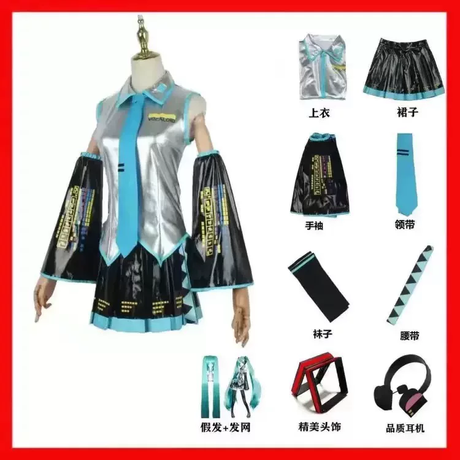
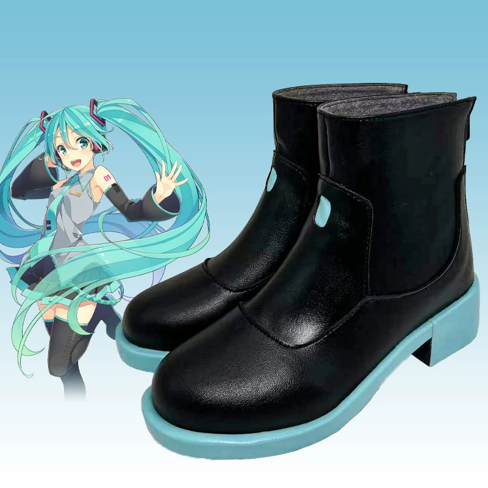

💇♀️ 1. Wig Styling (Hatsune Miku Twin Tails)
Step 1: Sectioning & Root Thinning
Section the wig carefully. Pay special attention to the “dead corner” behind the eye area. Thin the roots heavily — this is the secret to a light, transparent fringe instead of a heavy blocky look.
Step 2: Shaping the Bangs
Use a straightener to create a soft inward curve. Spray with water, comb into needle-like strands, and cut in layers. Keep the bottom layer longer so the top layers sit naturally.
Step 3: Styling the Sideburns (Long Corner Hair)
Style in 3 layers. Thin each layer at the root, shape with heat, and glue to the wig net with hairspray + flat iron so it stays fixed to the face.
Step 4: Managing Volume
Tie excess hair into small hidden ponytails (“tiger clips” anchors) so big twin-tail clips stay secure and don’t slide.
Step 5: The Ahoge (Top Sprout)
Apply U-glue + hot melt glue at the root. Trim, spray, and hold until dry for that iconic gravity-defying Miku ahoge.
Step 6: Final Setting
Hairspray generously, then use your hands + cool blow dryer to set the entire silhouette. Add small floral or butterfly pins as accents.
💄 2. Miku Makeup Tutorial
Step 1: Base Color
Apply pink eyeshadow over a large area on the eyelid and blend downward.
Step 2: Lower Lash Line
Extend the pink shade under the eye.
Step 3: Blush
Use the same pink tone as blush on the cheeks.
Step 4: Eyeliner
Draw a long downward-angled wing. Make the outer corner slightly pointed and rounded at the start of the wing.
Step 5: Deepen the Crease
Use reddish-brown eyeshadow to deepen the entire crease and connect it to the lower lash line.
Step 6: Highlight
Add bright highlight under the brow bone and on the inner corner. Only highlight the front half of the lower lash line for a cute pop.
Step 7: Lower Lashes
Draw 5 main lower lashes as anchors. Make them slightly curved and spaced evenly.
Step 8: Final Touches
Fill in between the lower lashes, add volume to the outer half, and finish with dramatic false lashes for that signature Miku sparkle.
🎀 Full Original Hatsune Miku Set
Here is everything you need to recreate the classic Vocaloid look:
- Silver sleeveless top with blue collar
- Black pleated skirt with blue trim
- Long black detached sleeves with yellow lettering
- Light blue necktie
- Black leg warmers / socks
- Blue waist belt with triangle pattern
- Teal twin-tail wig + wig cap
- Beautiful head accessory / hair ornament
- Quality black and pink headphones
- Black boots with light blue soles


💡 Important Tip: Always measure your body (bust, waist, hips, shoes size and height) and check the seller’s size chart carefully before buying. Getting the right size makes the costume look much better and more comfortable!
Practice the eye makeup a few times! the key is soft blending and that cute downward wing! Combine with the wig styling above and you’ll have a perfect original Miku look.